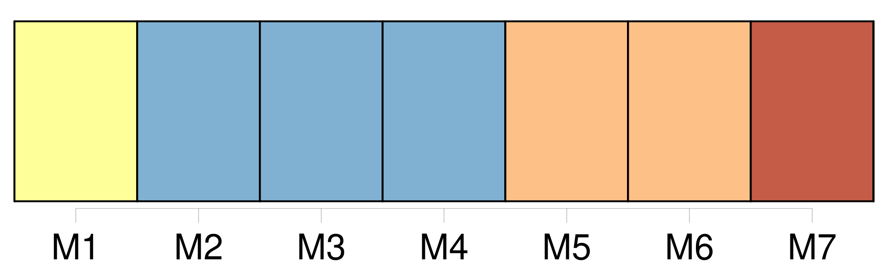

Longueur nb maillons : 16 mentions |
  |
Personne ne savait de quel pays venait [la famille de Lanty] , ni de quel commerce, de quelle spoliation, de quelle piraterie ou de quel héritage provenait une fortune estimée à plusieurs millions. Tous les membres de [cette famille] parlaient l’ italien, le français, l’ espagnol, l’ anglais et l’ allemand, avec assez de perfection pour faire supposer qu’ ils avaient dû long-temps séjourner parmi ces différents peuples. [27 phrases] [Cette mystérieuse famille] avait tout l’ attrait d’ un poème de lord Byron, dont les difficultés étaient traduites d’ une manière différente par chaque personne du beau monde : un chant obscur et sublime de strophe en strophe. [5 phrases] En supposant que [cette famille] eût été bohémienne d’ origine, [elle] était si riche, si attrayante, que la haute société pouvait bien [lui] pardonner [ses] petits mystères.
Mais, par malheur, l’ histoire énigmatique de [la maison Lanty] offrait un perpétuel intérêt de curiosité, assez semblable à celui des romans d’ Anne Radcliffe. [17 phrases] — Monsieur, c’ est un homme sur la vie duquel reposent d’ énormes capitaux, et de sa bonne santé dépendent sans doute les revenus de [cette famille] [4 phrases] Ces niaiseries, dites avec le ton spirituel, avec l’ air railleur qui, de nos jours, caractérise une société sans croyances, entretenaient de vagues soupçons sur [la maison de Lanty]
Enfin, par un singulier concours de circonstances, les membres de [cette famille] justifiaient les conjectures du monde, en tenant une conduite assez mystérieuse avec ce vieillard, dont la vie était en quelque sorte dérobée à toutes les investigations. Ce personnage franchissait -il le seuil de l’ appartement qu’ il était censé occuper à l’ hôtel de Lanty, son apparition causait toujours une grande sensation dans [la famille] [13 phrases] Aussi, après bien des tentatives, que la circonspection de tous les membres de [cette famille] rendit vaines, personne ne chercha-t -il à découvrir un secret si bien gardé. [620 phrases]
— Mais, me dit madame de Rochefide, quel rapport existe-t -il entre cette histoire et le petit vieillard que nous avons vu chez [les Lanty] ? [1 phrases] C’ est là qu’ en 1791 [la famille Lanty] la retrouva, et [pria] Vien de la copier. |

|
La ressource peut être téléchargée sur la page Ortolang
Si vous avez des questions ou vous voyez des erreurs, merci d'envoyer un mail à silvia.federzoni89@gmail.com
Site développé par S. Federzoni (contact)